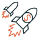

Would you like to change your Money Style? Click here for some free tips.
Hello! A summary of your result is in Money Style chart below
Based on your responses, here is a combination of the styles, with your
dominant Money Style being Collector
Negative
Emotional orientation
Positive
Short term
Time orientation
Long term

The Collector
You are happiest when you have large amounts of money at your disposal to spend, to save, and/or to invest. You have positive emotions when you think of money. For example, you are likely to equate having money with self-worth, power and status and you harbour dreams of building a significant fortune. You are extremely future-orientated when it comes to building wealth and are consciously aware of your finances. You will have a plan to build your wealth, but you will seek opportunities to accelerate your progress towards your goals (e.g., by making risky investments or starting multiple businesses or side businesses). At any point in time, you have a number of potential money-spinning businesses in your head or in motion.

The Splurger
You primarily like money for the enjoyment that it brings through the purchase of goods and experiences that make you and your loved ones happy. Your emotional orientation towards money is largely positive. When you think of money, you think of all the things having it will afford you. You think of the prestige and fun that it can buy you. Your time orientation towards money will tend to be more short term. You prefer to fulfil short term needs for yourself or loved ones and believe that the future will take care of itself. You will tend to make financial decisions based primarily on what you can “afford”, as opposed to any other objective metrics.
The Scrooge
Your favorite quote probably is “live ready”. You like to save money and you are conservative. You also like to prioritize your financial goals. You probably have a budget and may enjoy the processes of making up a budget and reviewing it periodically. You have a negative emotional reaction to money and may be somewhat consumed with worry about loss of money and the status and security it brings. Spending money makes you feel uncomfortable, you always shop for bargains, and you try to save money wherever you can. You have a long-term orientation to money and do not like frivolous spending, preferring to make plans and set financial targets and save and invest to achieve them. When you do save or invest, it is typically in lower risk instruments.

The Dodger
You probably avoid discussions about money, avoid paying your bills promptly, and will often find yourself in money emergencies. You have largely negative emotional reactions to money or money discussions. You are worried about a lack of understanding of money or how to manage it. You might also worry that you appear vain or greedy if you discuss money openly or frequently. You might become stressed when faced with the challenge of creating a financial plan. You will also have a short-term orientation to money and will avoid making detailed financial plans or budgets, preferring to take each day is it comes. You may have limited information on your spending habits or your net worth.

The Abbot
You are aware that money is a necessary part of life, but you are suspicious of great wealth and try to live a life that transcends money. Your emotional orientation towards money is neutral. You are future-oriented, a giver and you tend to make financial decisions based on your values. Your focus on accumulating wealth in the long-term comes from your desire to make a difference in the lives of the people and organizations you care about. You are charitable and prioritize donating to philanthropic causes. You are aware of the good things that money can provide but are more concerned about getting these for everyone as opposed getting more of these good things for yourself. Similarly, your time orientation towards money is also neutral. Your long-term plans are not set in any specific financial terms but are usually more about life goals and milestones or in terms of your impact on the world.